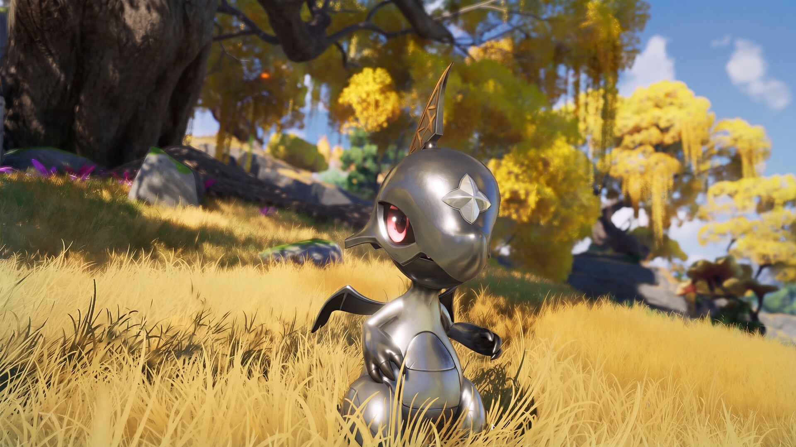
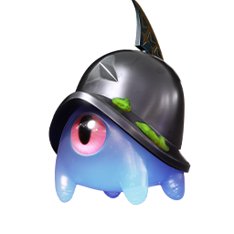

할만한게임추천 애니모 초반 육성 티어, 첫 파티 스타터부터 짜보는 법
애니모가 9월 16일에 PC·콘솔로 정식 출시하고 어느새 오늘로 딱 이레째인데요, 모바일은 내일인 9월 23일에 열리니 아직 안 해보신 분들도 딱 좋은 타이밍이에요. 요즘 할만한게임추천 찾으실 때 오픈월드 몬스터 포획 신작 하나쯤 눈에 담아두시면 좋을 것 같아서, 오늘은 처음 접속했을 때부터 마주치는 선택지들을 쭉 짚어볼게요.
지난번에 애니모 전투 티어표랑 포지션 5종 정리 글을 각각 올렸었는데요, 이번 글은 그것보다 한참 앞선 이야기예요. 전투 티어표가 어느 정도 진행한 다음에 볼 표라면, 이 글은 스타터를 고르는 순간부터 메인 스토리로 첫 로스터를 채우는 초반 구간 얘기거든요. 처음 파티를 짜실 때 참고하시면 딱 좋을 것 같아요.

출처: 애니모 공식 사이트
애니모는 9월 16일 PC·콘솔, 9월 23일 모바일로 나뉘어 출시하는 오픈월드 몬스터 포획 신작이에요.
초반 파티, 이 네 자리부터 채우면 돼요
애니모 초반 파티는 메인 딜러 1 + 서브 딜러 1 + 힐러 1 + 브레이크 요원(또는 필드 유틸 펫) 1, 이렇게 네 자리를 채우는 게 제일 기본이에요. 애니모가 전투 파티를 4마리로 꾸리는 구조라, 이 네 자리 공식이 딱 맞아떨어지거든요.
다만 여기서 '메인 딜러·서브 딜러·힐러·브레이크 요원'은 제가 이해하기 편하게 풀어서 부르는 이름이에요. 게임 도감에 실제로 적혀 있는 공식 포지션은 딜·치유·서포터·격파·에너지 재생, 이렇게 다섯 가지고요. 딜 포지션이 메인·서브 딜러 자리를, 치유 포지션이 힐러 자리를, 격파 포지션이 브레이크 요원 자리를 맡는다고 보시면 되고, 서포터랑 에너지 재생은 파티가 좀 더 커진 다음에 챙겨도 늦지 않아요.
첫 갈림길, 헬리온이랑 루나센 중 뭘 고르실 건가요
애니모를 처음 시작하면 헬리온과 루나센 둘 중 한 마리를 스타터로 고르게 되는데요, 취소하거나 나중에 바꿀 수 없는 선택이라 신중하게 보시는 게 좋아요.
둘 다 빛 속성에 딜 포지션인 것도, 기본 능력치가 똑같은 것도 동일해서 속성이나 스탯으로 고민할 필요는 없어요. 대신 싸우는 방식과 고유 특성은 확실히 다른데요, 해외 공략 매체 게임위드(GameWith)를 참고해서 정리하면 이래요.
| 구분 | 헬리온 | 루나센 |
|---|---|---|
| 전투 방식 | 근접 거리에서 몰아치는 버스트 딜러 | 원거리에서 지속력 있게 싸우는 타입 |
| 조작 난이도 | 관여도가 높은 편 | 상대적으로 다루기 쉬운 편 |
| 고유 특성 | 일반 공격 4번마다 다음 스킬을 강화하는 '태양의 고리' | 스킬·궁극기로 인장을 쌓고, 일반 공격으로 소모해 피해와 HP 회복을 같이 챙김 |
이 장르가 처음이시라면 루나센 쪽이 진행이 더 수월하다는 평이 많고, 몰아치는 손맛을 좋아하신다면 헬리온도 매력적이에요. 참고로 루나센은 얼티밋 스킬을 쓰면 '루나티아'라는 형태로 잠깐 바뀐다는 이야기도 있는데, 이게 레벨업으로 도달하는 영구 진화인지 전투 중에만 유지되는 일시적 변신인지는 아직 공식 확인이 안 돼서 단정하지 않을게요.🔍 인게임 확인 필요

이미지: 스팀 스토어 페이지
실제 스타터 화면은 아니지만, 스타터도 이런 식으로 필드에서 첫 로스터에 합류하게 돼요.
메인 스토리에서 또 한 번 갈리는 길, 투구누니 얘기예요
메인 스토리를 따라가다 보면 어둠 속성 애니모 투구누니를 만나는데, 이 친구는 45레벨을 달성하면 누니용사나 아머누니, 둘 중 하나로 갈라져요.
같은 뿌리에서 갈라지는 두 선택지라 어느 한쪽이 무조건 우월하다고는 못 해요. 포지션 자체가 다르거든요. 누니용사는 딜 포지션이라 제어나 무력화 상태인 상대한테 피해를 줄 때 추가 피해가 30% 늘어나는 '맹공의 기세' 특성을 갖고 있어서, 상대를 묶어둔 다음 몰아치는 조합에 잘 맞아요. 아머누니는 격파 포지션인데, 이 아이는 저희가 애니모 전투 티어표에서 S티어(격파 포지션)로 이미 한 번 소개했던 얼굴이에요. 무력화 수치가 높은 편이라 상대를 묶어두는 역할로 자주 쓰인다고 했었죠.
정리하면 이렇게 갈라서 보시면 돼요.
| 진화형 | 포지션 | 이럴 때 좋아요 |
|---|---|---|
| 누니용사 | 딜 | 격파는 이미 다른 애니모로 채워뒀고, 딜을 한 마리 더 원할 때 |
| 아머누니 | 격파 | 브레이크 요원 자리가 아직 비어 있을 때 |

45레벨을 찍으면 누니용사나 아머누니, 둘 중 하나로 갈라지는 투구누니예요.
힐러는 아이시우스로 잡아도 충분해요
초반 힐러 자리는 물·얼음 속성 치유 포지션인 아이시우스 하나면 충분히 든든해요.
아이시우스는 장꾸모리를 20레벨까지 키우면 만나는 형태인데요, HP가 120에 마법 방어까지 110으로 두꺼운 편이라 힐러치고 맷집이 좋은 축에 속해요. '물의 정령'이라는 특성 덕에 물 환경에서는 스킬 에너지 소모까지 16% 줄어들어서 오래 버티는 데도 유리하고요. 저희가 예전에 「애니모 천휘의 계약 선택권 아이시우스 강추」랑 전투 티어표 글에서도 다뤘던 것처럼, 아이시우스는 천휘 형태로 올라가면 평가가 한 단계 더 좋아진다는 얘기가 많으니 나중에 천휘 기회가 오면 아이시우스한테 몰아주는 것도 방법이에요.

물의 정령 특성을 가진 아이시우스예요 — 초반 힐러로 무난하게 추천드려요.
재화 아까우면 이렇게 육성하세요
초반엔 재화가 넉넉하지 않으니, 메인 딜러 한 마리랑 아이시우스 위주로 집중 육성하고 나머지는 '쓸 만한 정도'까지만 키우는 걸 추천드려요.
스타터든 투구누니 계열이든 메인 딜러로 점찍은 한 마리한테 자원을 몰아주고, 힐러인 아이시우스까지만 확실하게 키워두면 초반 콘텐츠는 무리 없이 돌아가더라고요. 나머지 서브 딜러나 브레이크 요원은 굳이 여러 마리를 분산해서 키우지 마시고, 딱 한 자리씩만 '쓸 만한 정도'로 맞춰두시는 걸 권해드려요. 이것저것 다 손대다 보면 어느 것도 제대로 안 크는 게 몬스터 수집 RPG에서 흔히 겪는 함정이거든요.
자주 묻는 질문
Q. 지금(9월 22일) 시작해도 안 늦었을까요?
안 늦었어요. PC·콘솔은 출시 이레째라 아직 초반 구간에 유저가 많이 몰려 있고, 모바일은 아직 출시 전(9월 23일 예정)이라 오히려 지금부터 시작해도 전혀 안 늦어요. 파티 짜기 정보가 막 쌓이기 시작하는 타이밍이라 따라가기도 좋고요.
Q. 격파 포지션이 정확히 뭘 하는 자리예요?
상대를 무력화·그로기 상태로 만들어서 묶어두는 자리예요. 상대가 묶여 있는 동안 딜러들이 추가 피해를 더 넣기 좋아지니까, 딜 포지션이랑 짝을 지어 쓰면 효율이 좋아져요.
Q. 꼭 이 조합대로 짜야 하나요?
그렇진 않아요. 이 글은 게임을 처음 시작하는 시점에서 무난하게 갈 수 있는 방향을 짚은 거지, 확정된 정답은 아니에요. 취향에 맞는 다른 애니모로 자리를 채우셔도 얼마든지 괜찮아요.
애니모 초반 육성 정리
정리하면, 초반 파티는 메인 딜러·서브 딜러·힐러·브레이크 요원 네 자리를 채우는 게 기본이고, 스타터는 헬리온이냐 루나센이냐부터 고르고, 메인 스토리로 만나는 투구누니는 누니용사나 아머누니로 갈라진다는 것, 힐러는 아이시우스면 무난하다는 것까지 짚어봤어요. 다만 이건 출시 이레째 시점의 초반 공식일 뿐이고, 메타가 아직 다 자리 잡은 것도 아니라서 '확정 1티어'라고 못 박을 단계는 아니에요. 저희가 이미 정리해둔 전투 티어표랑 포지션 5종 글도 같이 보시면 좀 더 큰 그림이 잡히실 거고, 실전 데이터가 더 쌓이면 그때 또 새로 정리해서 들고 올게요.
✔ 애니모 같이 보기 좋은 내용
· 애니모 전투 티어표 정리, 1티어 애니모 추천까지 짚어봤어요
· 애니모 포지션 5종 뭐부터 키워야 하나, 초반 육성 우선순위 잡는 법
· 애니모 천휘의 계약 선택권 아이시우스 강추! 추천&비추천 정리
참고한 곳
· 애니모 공식 위키
· 애니모 공식 사이트